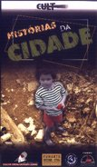
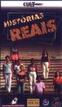

SHORTS ON VIDEO
|
(VHS, 5 x 60 min, 1998) If you like exciting stories, Casa de Cinema de Porto Alegre has selected twenty-one shorts, on five top quality tapes. They are stories of Brazil, city stories. True stories, radical stories. Stories of love and death. You will remember these stories forever. They are stories that show Brazil and its people the way only movies can do. |
Find out why Dorival cannot take a shower. Find out why Dolores had her husband followed. Follow Noeli’s not so ordinary daily life. Laugh with the tragedy of Hilário Pestana. And be moved by the story of a tomato. You don’t think you will be moved with the story of a tomato? You are wrong.
Five tapes, where the right doses of fiction and reality mix, with the power of synthesis of the short film and high production quality. See for yourself what the film festivals of Berlin, Clermont-Ferrand, Cuba, Rotterdam and Huelva already know: some of the best shorts in the world are made right here, in the south of Brazil.
Twenty-one films, five tapes with the best of Brazil’s filmmaking, are now available to you.
 VOLUME 1 - HISTÓRIAS DA CIDADE ILHA DAS FLORES / Island of flowers (Jorge Furtado, 1989)
NO AMOR / For free (Nelson Nadotti, 1982)
PASSAGEIROS / Passengers (Carlos Gerbase e Glênio Póvoas, 1987)
A MORTE NO EDIFÍCIO IMPÉRIO / Death on the Empire Building (Beto Souza, 1992)
ÂNGELO ANDA SUMIDO / Angelo has vanished (Jorge Furtado, 1997)Total running time: 57 minutes.
VOLUME 2 - HISTÓRIAS DO PAÍS O DIA EM QUE DORIVAL ENCAROU A GUARDA / The Day Dorival faced the guard (Jorge Furtado e José Pedro Goulart, 1986)
BARBOSA / Barbosa (Jorge Furtado e Ana Luiza Azevedo, 1988)
MEMÓRIA / Memory (Roberto Henkin, 1990)
BATALHA NAVAL / Battle ship (Liliana Sulzbach, 1993)
A MATADEIRA / The Killing machine (Jorge Furtado, 1994)Total running time: 67 minutes.
VOLUME 3 - HISTÓRIAS DE AMOR E MORTE DEUS EX-MACHINA / Deus ex-machina (Carlos Gerbase, 1995)
O CORPO DE FLÁVIA / Flavia's body (Carlos Gerbase, 1990)
A COISA MAIS IMPORTANTE DA VIDA / The Most important thing in life (alunos do curso de Introdução ao Fazer Cinema, 1990)
UM HOMEM SÉRIO / A serious man (Dainara Toffoli e Diego de Godoy, 1996)Total running time: 66 minutes.
 VOLUME 4 - HISTÓRIAS REAIS ESTA NÃO É A SUA VIDA / This is not your life (Jorge Furtado, 1991)
VENTRE LIVRE / Liberation (Ana Luiza Azevedo, 1994)Total running time: 64 minutes.
VOLUME 5 - HISTÓRIAS RADICAIS SEXO & BEETHOVEN, O REENCONTRO / Sex & Beethoven, the Reunion (Carlos Gerbase, 1997)
OBSCENIDADES / Obscenities (Roberto Henkin, 1986)
AULAS MUITO PARTICULARES / Very private lessons (Carlos Gerbase, 1988)
PROJETO PULEX / The Pulex Project (Tadao Miaqui, 1991)
VICIOUS / Vicious (Rogério Brasil Ferrari, 1988)Total running time: 58 minutes.
The distribution of SHORTS ON VIDEO throughout Brazil is made jointly by Casa de Cinema de Porto Alegre and the distribution companies Cult Filmes and Funarte-DECINE.
The project was financed by FUMPROARTE, the Fund of Support to Cultural and Artistic Productions in Porto Alegre City Council).